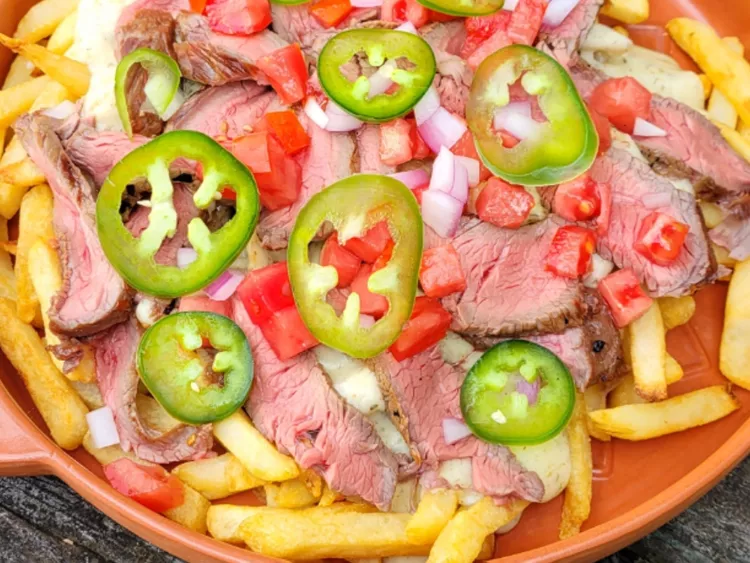
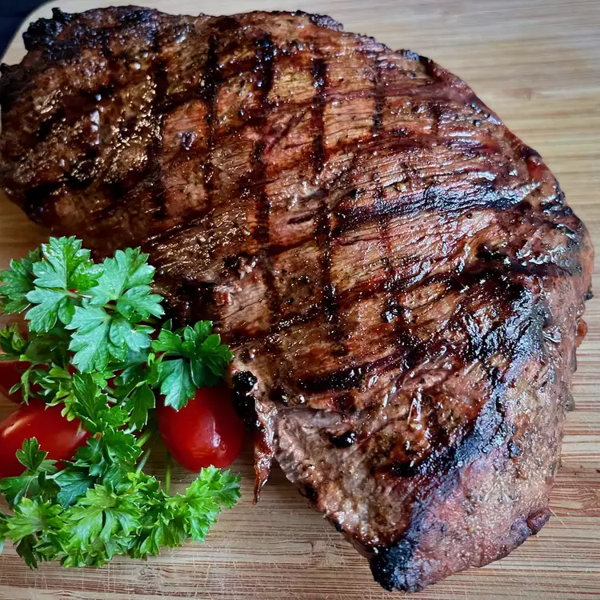

Loaded Steak Fries
Skip going out to the bar, because these loaded steak fries are all you need. A simple marinade brings a flavorful grilled steak to these loaded fries. Frozen fries are baked, then topped with a homemade cheese sauce, sliced steak, and fresh toppings.
By; Chef Moh

Grilled Sirloin Tri-Tip
Tri-tip is an irregularly shaped cut near the sirloin, that is flavorful and less expensive than a sirloin steak. I like to serve it sliced, with a simple baked potato, tossed salad, and a crusty baguette.
Submtted by; Habibi

Easy Fried Rice
You're home alone? Wat some rice, but you want to switch thoings around? A quick fried rice recipe like you get at your favorite Chinese restaurant. Leftover rice, plus a couple of eggs, baby carrots, peas, and soy sauce is all you need. Garnish with sliced green onions, if desired.
By; Chef Brandon